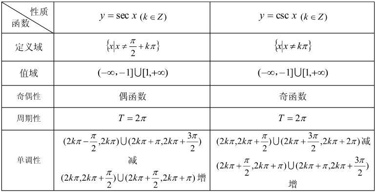
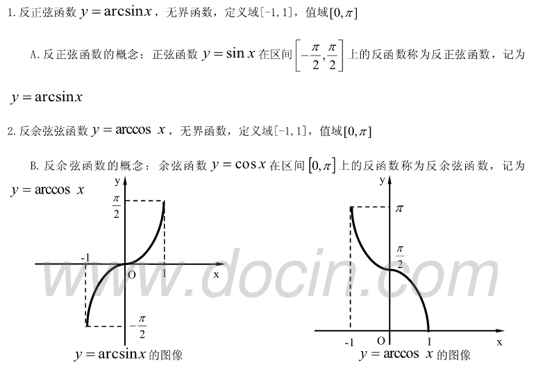

初等函数公式大全
各大初等函数图像
常数函数
$y = C(其中C为常数)$
幂函数
$y = x^a,x是自变量,a是常数$
指数函数
$y = a^x,x是自变量，a是常数且a > 0,a \neq 1$
对数函数
$y = log_ax，a是常数且a > 0, a \neq 1，定义域 x \in (0,+\infty)$
三角函数
$正弦函数:y = sinx,定义域x \in (-\infty，+\infty),值域y\in[-1 , 1]$
$余弦函数:y = cosx,定义域x \in (-\infty，+\infty),值域y\in[-1 , 1]$



圆
伯努利双纽线
以下开始至乘法公式来自于原视频：每天一遍，高数再见！—必考曲线_哔哩哔哩_bilibili
心形线（心脏线）
阿基米德螺线
星形线
玫瑰线
摆线（旋轮线）
乘法公式与因式分解
因式分解方法
十字相乘法（适合解决$ax^2\pm abx\pm b$类型的式子）
二次方式
累加运算
排列与组合
阶乘
排列数计算公式
总结：
$A^m_n$为从n开始阶乘，一直乘到第m个
组合数计算公式
根号运算
指数运算
对数运算
三角函数
特殊角的三角函数值
三角函数恒等式
倍角公式与半角公式
两角和与差及和差化积、积化和差公式
和差化积：正加正，正在前。正减正，余在前。余加余，余并肩。余减余，余不见，负号很讨厌。
转换规律
半角、倍角公式的转换
令$a = b = x$
利用$cos2x = cos^2x - six^2x = 2cos^2-1 = 1 - 2sin^2x$逆推
令$x {\div} 2$
令$sin^2\frac{x}{2} \div cos^2 \frac{x}{2}$
推导：
积化和差、和差化积公式转换
令$sin(a + b) + sin(a - b)$
令$sin(a + b) - sin(a - b)$
令$cos(a+b)+cos(a-b)$
令$cos(a+b)-cos(a-b)$
左右角替换，左边的角替换成右边的，右边也一样
基本不等式
本博客所有文章除特别声明外，均采用 CC BY-SA 4.0 协议 ，转载请注明出处！